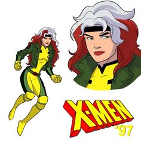

 Vampira, ou Rogue, é uma mutante dos X-Men conhecida por sua habilidade de absorver os poderes, memórias e vitalidade de outros com um simples toque. Ela nasceu como Anna Marie no sul dos Estados Unidos e, quando jovem, seus poderes se manifestaram acidentalmente, o que a levou a se isolar e temer o contato físico com qualquer pessoa. Inicialmente, Vampira foi manipulada pela vilã Mística e se juntou à Irmandade de Mutantes. Durante uma batalha, ela absorveu permanentemente os poderes e a psique de Carol Danvers (Capitã Marvel), adquirindo força sobre-humana, voo e resistência. Essa experiência a traumatizou, levando-a a procurar ajuda com os X-Men. Ao se juntar aos X-Men, Vampira passou a lutar ao lado deles e, com o tempo, ganhou confiança e controle sobre seus poderes. Ela é uma personagem marcada por seu desejo de se conectar com os outros, mas vive constantemente com o medo de feri-los devido aos seus poderes incontroláveis.